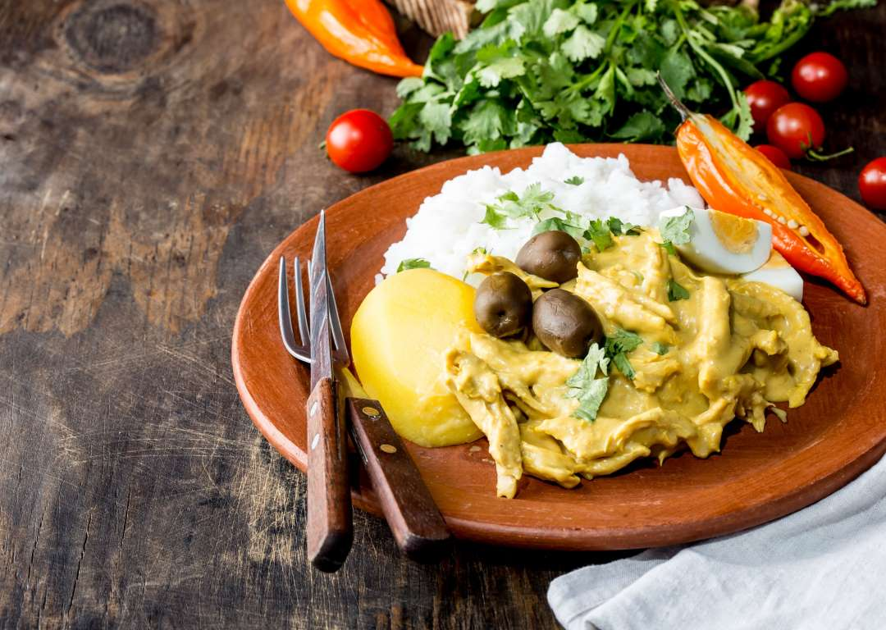
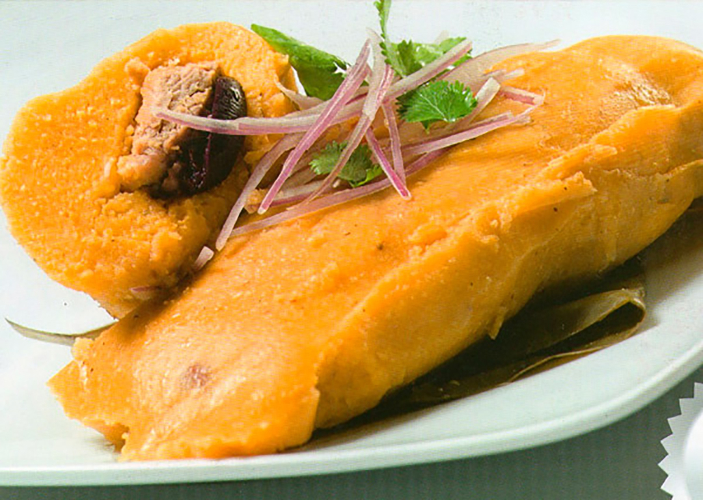
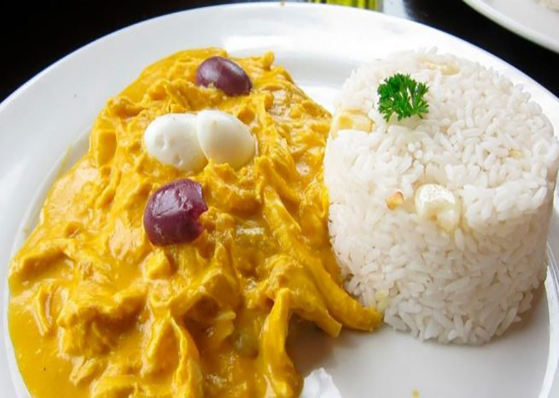

¡Bienvenidos a nuestra casa!
La carta

- Lomo saltado
- Causda limeña
- Papa rellena
- Ceviche
- Arroz Chaufa
- Aeropuerto
- Ají de gallina
- Tamal
Menú diario

- Martes
- Lomo saltado / papa huacaína
- Tamal Criollo / Arroz chaufa
- Miércoles
- Papa rellena / Causa limeña
- Arroz chaufa / Aeropuerto
- Jueves
- Ceviché
- Tamal Criollo
- Viernes
- Ceviché
- Papa huacaína
- Sábado
- Lomo saltado / Papa huacaína
- Tamal Criollo / Arroz chaufa
- Domingo
- Papa rellena / Causa limeña
- Arroz chaufa / Aeropuerto
¡Nuestra gastronomía peruana!
Disfrute de nuestros sabores tradicionales.
Tenemos variedad en platos de comida peruana y es el deseo de poder deleitarles con los sabores de nuestra tierra, Lima, Perú.
Tenemos un equipo humano comprometido y dedicado, que trabaja con productos frescos de óptima calidad para que llegue a su mesa, lo disfrute y regrese por más.
Disfruta de la mejor comida tradicional peruana, en Madrid.
Gastronomía Peruana por Gastón Acurio


CONTACTO
Calle Carrera de San Francisco, 15, 28005 Madrid
Tel. 910 01 45 97
Noemi@restauranteincaico.com
HORARIO
Lunes: cerrado
Martes a jueves: 13:30 – 16:00 h. | 20:30 – 23:00 h.
Viernes a sábado: 13:30 – 16:00 h. | 20:30 – 00:00 h.
Domingo: 13:30 – 16:00 h.
CÓMO LLEGAR
Autobús: C2, 60, 148
Metro: La Latina / Puerta de Toledo